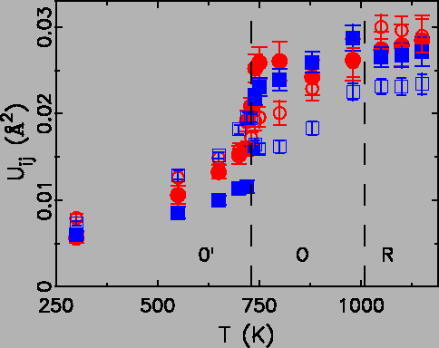

|
 |
It may become necessary to discuss the somewhat counter-intuitive
decrease of the
 rMn-O
rMn-O upon warming in the average structure, while
the local structure analysis shows it to actually slightly increase as
expected from the normal thermal expansion. The local structure PDF
analysis gives the physical distance between atomic pairs (i.e., the
Mn and O atoms in this case) without any assumption about the long
range ordered structure. The average structure analysis first assumes
one crystallographic unit cell with some symmetry, then obtains the
the average position of each atom in the unit cell. Therefore, the
position of each atom is averaged before the atomic pair distance is
calculated. The average structure analysis will give the physical
atomic pair distances in the perfect crystalline materials. However,
these distances may not represent the real physical values in the
presence of structural disorder. This is in fact what occurs in the
high temperature LaMnO3 phases. Locally JT distorted MnO6 octahedra lay their long bonds randomly along each crystallographic
axis. The three Mn-O bond lengths thus approach their averaged value
across the JT transition. Still, this does not explain the decrease of
the
upon warming in the average structure, while
the local structure analysis shows it to actually slightly increase as
expected from the normal thermal expansion. The local structure PDF
analysis gives the physical distance between atomic pairs (i.e., the
Mn and O atoms in this case) without any assumption about the long
range ordered structure. The average structure analysis first assumes
one crystallographic unit cell with some symmetry, then obtains the
the average position of each atom in the unit cell. Therefore, the
position of each atom is averaged before the atomic pair distance is
calculated. The average structure analysis will give the physical
atomic pair distances in the perfect crystalline materials. However,
these distances may not represent the real physical values in the
presence of structural disorder. This is in fact what occurs in the
high temperature LaMnO3 phases. Locally JT distorted MnO6 octahedra lay their long bonds randomly along each crystallographic
axis. The three Mn-O bond lengths thus approach their averaged value
across the JT transition. Still, this does not explain the decrease of
the
 rMn-O
rMn-O , as none of the three Mn-O bonds shorten across the JT
transition. In the mean time, the average of the lattice constants
also decreases. The angle between the Mn-O bonds and the corresponding
crystallographic axis has to increase for this to happen, i.e., an
increase of the MnO6 octahedral tilting angle. As mentioned in the
previous paragraph, an increase of 0.4o of the tilting angle is
sufficient to account for the decrease of the decrease of
, as none of the three Mn-O bonds shorten across the JT
transition. In the mean time, the average of the lattice constants
also decreases. The angle between the Mn-O bonds and the corresponding
crystallographic axis has to increase for this to happen, i.e., an
increase of the MnO6 octahedral tilting angle. As mentioned in the
previous paragraph, an increase of 0.4o of the tilting angle is
sufficient to account for the decrease of the decrease of
 rMn-O
rMn-O as
well.
as
well.
The sudden decrease of resistivity across the JT transition is still
somewhat puzzling. As the nature of the JT transition is orbital order
to disorder, we would expect the more disordered state has lower
conductivity due to the increased scattering by the
``defects''. Apparently, this is not the case, and there has to be
some other physical origin. Zhou and
Goodenough [132,143,144,145] have
proposed a vibronic model where small fractions of Mn3+
disproportionate into Mn2+ and Mn4+. While this charge
disproportionation improves the conductivity, the JT distortions of
those involved MnO6 octahedra also disappears. Though our PDF
studies strongly suggest the fully JT distorted MnO6 octahedra at
all temperatures, the error bar of a few percent in our analysis may
be incapable of resolving such small fractions. This author thinks the
dynamic JT nature of the high T phases may offer an explanation to the
sudden increase of conductivity. In the scenario of dynamic JT
distortions, the MnO6 octahedron is constantly changing its shape,
which means the eg electron is moving around at least inside one
octahedron. This eg electron jumping is supposed to be a slow
process as our neutron powder diffraction study (energy resolution
 20 meV) sees the fully distorted state. Nevertheless, due to
the non-ionic nature of the Mn-O bonding, we would expect the eg electron to possibly hop to its neighboring octahedron, thus
increasing the conductivity. Particularly in the case of short range
JT distortion correlations in the O and R phases, this gives the
``large polaronic transport'' picture.
20 meV) sees the fully distorted state. Nevertheless, due to
the non-ionic nature of the Mn-O bonding, we would expect the eg electron to possibly hop to its neighboring octahedron, thus
increasing the conductivity. Particularly in the case of short range
JT distortion correlations in the O and R phases, this gives the
``large polaronic transport'' picture.
To conclude, we have used a diffraction probe of the local atomic
structure, neutron pair distribution function (PDF) analysis, to see
if the local and average behaviors can be reconciled and understood.
This method allows quantitative structural refinements to be carried
out on intermediate length-scales in the nanometer range. We confirm
that the JT distortions persist locally at all temperatures, and
quantify the amplitude of these local JT distortions. No local
structural study exists of the high-temperature rhombohedral R-phase
that exists above TR = 1010 K. We show for the first time that even
in this phase where the octahedra are constrained by symmetry to be
undistorted, the local JT splitting is constant. Fits of the PDF over
different r-ranges indicate that locally distorted domains have a
diameter of  16 Å with four MnO6 octahedra spanning the
locally ordered cluster. The unit cell volume collapse seen
crystallographically comes from a reduction in the average Mn-O
bond-length; however, this quantity is constant with temperature in
the local structure. We show that the observed volume reduction is
consistent with increased octahedral rotational degrees of freedom. We
speculate that local clusters of the low-T structure form on cooling
at TR but are disordered and align themselves along the three
crystal axes. These domains grow, and the orbital ordering pattern
becomes long-range ordered below TJT.
16 Å with four MnO6 octahedra spanning the
locally ordered cluster. The unit cell volume collapse seen
crystallographically comes from a reduction in the average Mn-O
bond-length; however, this quantity is constant with temperature in
the local structure. We show that the observed volume reduction is
consistent with increased octahedral rotational degrees of freedom. We
speculate that local clusters of the low-T structure form on cooling
at TR but are disordered and align themselves along the three
crystal axes. These domains grow, and the orbital ordering pattern
becomes long-range ordered below TJT.